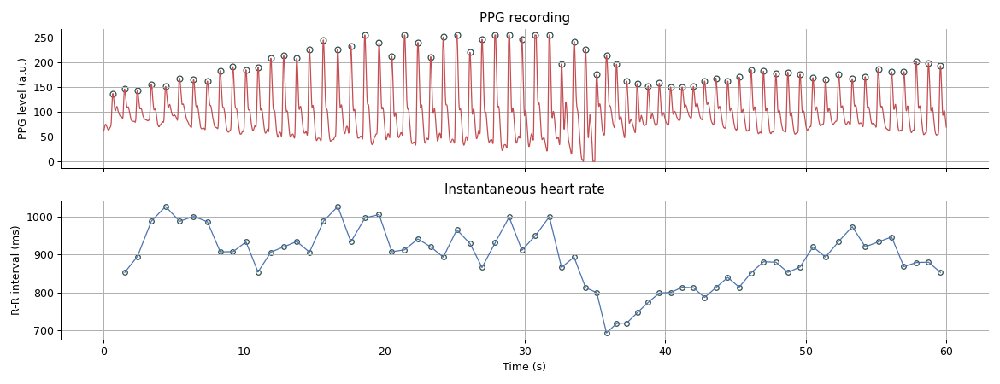
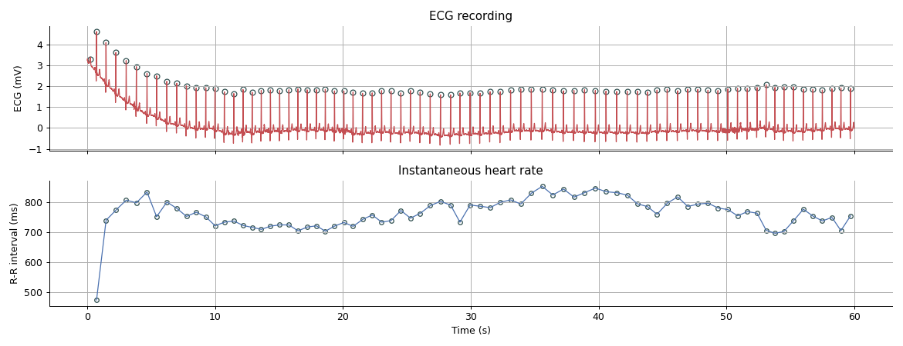

systole.plotting.plot_raw¶
-
systole.plotting.plot_raw(signal: Union[pandas.core.frame.DataFrame, numpy.ndarray], sfreq: int = 75, type: str = 'ppg', ecg_method: str = 'hamilton', ax: Optional[matplotlib.axes._axes.Axes] = None, figsize: Tuple[float, float] = (13, 5), **kwargs) → matplotlib.axes._axes.Axes[source]¶ Visualization of PPG signal and systolic peaks detection.
- Parameters
- signal
pandas.DataFrameornumpy.ndarray Dataframe of PPG or ECG signal in the long format. If a data frame is provided, it should contain at least one
'time'and one colum for signal(either'ppg'or'ecg'). If an array is provided, it will automatically create a DataFrame using the array as signal andsfreqas sampling frequency.- sfreqint
Signal sampling frequency. Default is set to 75 Hz.
- typestr
The type of signal provided. Can be
'ppg'(pulse oximeter) or'ecg'(electrocardiography). The peak detection algorithm used depend on the type of signal provided.- ecg_methodstr
Peak detection algorithm used by the
systole.detection.ecg_peaks()function. Can be one of the following: ‘hamilton’, ‘christov’, ‘engelse-zeelenberg’, ‘pan-tompkins’, ‘wavelet-transform’, ‘moving-average’. The default is ‘hamilton’.- figsizetuple
Figure size. Default set to (13, 5).
- **kwargskeyword arguments
Additional arguments will be passed to :py:func:systole.detection.oxi_peaks() or :py:func:systole.detection.ecg_peaks(), depending on the type of data.
- signal
- Returns
- ax
matplotlib.axes.Axes The matplotlib axes containing the plot.
- ax
See also
Examples
Plotting PPG recording.
>>> from systole import import_ppg >>> from systole.plotting import plot_raw >>> # Import PPG recording as pandas data frame >>> ppg = import_ppg() >>> # Only use the first 60 seconds for demonstration >>> ppg = ppg[ppg.time<60] >>> plot_raw(ppg)
Plotting ECG recording.
>>> from systole import import_dataset1 >>> from systole.plotting import plot_raw >>> # Import PPG recording as pandas data frame >>> ecg = import_dataset1(modalities=['ECG']) >>> # Only use the first 60 seconds for demonstration >>> ecg = ecg[ecg.time<60] >>> plot_raw(ecg, type='ecg', sfreq=1000, ecg_method='pan-tompkins')
